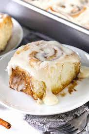

Cinnamon Roll

Description
A cinnamon roll is a sweet pastry that is seasoned with cinnamon powder.
The cinnamon roll recipe is also well-known worldwide, with names such
as cinnamon bun and cinnamon snail, and it is in the shape of a swirl,
hence the name cinnamon swirl.
Ingredients
- Milk
- Granulated Sugar
- Active Dry Yeast
- Butter
- Bread Flour
- Egg + Egg Yolk
- Dark Brown Sugar
- Vietnamese Cassia Cinnamon
- Salt
- Cream Cheese
- Powdered Sugar
- Vanilla
Steps
- For rolls, Dissolve 1 packet of active dry yeast in 1 cup of lukewarm
milk. Let sit for 10 min until the yeast bubbles up
- In a large mixing bowl, combine the yeast mixture, 1/2 cup sugar,
6 tbsp melted butter, 1 tsp salt 2 eggs, and 4 cups of flour and mix
until ragged dough forms
- If using a stand mixer, use dough hook and mix until a smooth, elastic
dough forms. If kneading by hand, turn dough onto a floured surface
and knead for ~10-15 min until dough is slighlty tack and bounces back.
- Place the dough in a greased bowl, cover with a clean towel, and let rise
in a warm place for about 1.5-2 hours, or until doubled in size./li>
- In a small bowl, mix together 6 tbsp softened butter, 1 cup packed dark
brown sugar, and 3 tbsp cinnamon until well combined. Set aside.
- Once the dough has doubled in size, punch it down and roll it out on a
floured surface into a rectangle, about 16x20 inches. Spread the cinnamon
filling evenly over the dough, leaving a small border around the edges.
Starting from the long edge, tightly roll up the dough into a log and cut
into 12 equal sized pieces using a serrated knife or dental floss
- Place cinnamon buns into a greased baking dish, leaving space in between
each one. Cover dish with a clean towel and let buns rise for another 35-40
min in a warm place. While buns are proofing, preheat oven to 350 F
- Once buns have proof, bake for 25-30 minutes or until the tops look golden
brown.
- While the buns are baking, prepare the cream cheese frosting by beating together
1/4 cup softened cream cheese, 6 tbsp butter, 1/8 tsp salt, and 1/2 tsp vanilla
extract until smooth. Then, gradually add 1 1/2 cups of powdered sugar and beat
until creamy and well combined.
- Once the cinnamon buns are done baking, remove them from the oven and let them
cool for a few minutes. Spread the cream cheese frosting evenly over the warm buns.
- Serve the cinnamon buns warm and enjoy!